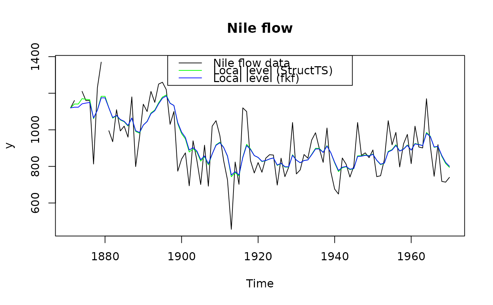

This function allows for fast and flexible Kalman filtering. Both, the
measurement and transition equation may be multivariate and parameters
are allowed to be time-varying. In addition “NA”-values in the
observations are supported. fkf wraps the C-function
FKF which fully relies on linear algebra subroutines contained
in BLAS and LAPACK.
fkf(a0, P0, dt, ct, Tt, Zt, HHt, GGt, yt)A vector giving the initial value/estimation of the state variable.
A matrix giving the variance of a0.
A matrix giving the intercept of the transition equation (see Details).
A matrix giving the intercept of the measurement equation (see Details).
An array giving the factor of the transition equation (see Details).
An array giving the factor of the measurement equation (see Details).
An array giving the variance of the innovations of the transition equation (see Details).
An array giving the variance of the disturbances of the measurement equation (see Details).
A matrix containing the observations. “NA”-values are allowed (see Details).
An S3-object of class “fkf”, which is a list with the following elements:
att | A \(m \times n\)-matrix containing the filtered state variables, i.e. att[,t] = \(a_{t|t}\). |
at | A \(m \times (n + 1)\)-matrix containing the predicted state variables, i.e. at[,t] = \(a_t\). |
Ptt | A \(m \times m \times n\)-array containing the variance of att, i.e. Ptt[,,t] = \(P_{t|t}\). |
Pt | A \(m \times m \times (n + 1)\)-array containing the variances of at, i.e. Pt[,,t] = \(P_t\). |
vt | A \(d \times n\)-matrix of the prediction errors i.e. vt[,t] = \(v_t\). |
Ft | A \(d \times d \times n\)-array which contains the variances of vt, i.e. Ft[,,t] = \(F_t\). |
Kt | A \(m \times d \times n\)-array containing the “Kalman gain” i.e. Kt[,,t] = \(k_t\). |
logLik | The log-likelihood. |
status | A vector which contains the status of LAPACK's dpotri and dpotrf. \((0, 0)\) means successful exit. |
sys.time | The time elapsed as an object of class “proc_time”. |
State space form
The following notation is closest to the one of Koopman et al. The state space model is represented by the transition equation and the measurement equation. Let \(m\) be the dimension of the state variable, \(d\) be the dimension of the observations, and \(n\) the number of observations. The transition equation and the measurement equation are given by $$\alpha_{t + 1} = d_t + T_t \cdot \alpha_t + H_t \cdot \eta_t$$ $$y_t = c_t + Z_t \cdot \alpha_t + G_t \cdot \epsilon_t,$$ where \(\eta_t\) and \(\epsilon_t\) are iid \(N(0, I_m)\) and iid \(N(0, I_d)\), respectively, and \(\alpha_t\) denotes the state variable. The parameters admit the following dimensions:
| \(\alpha_{t} \in R^{m}\) | \(d_{t} \in R^m\) | \(\eta_{t} \in R^m\) |
| \(T_{t} \in R^{m \times m}\) | \(H_{t} \in R^{m \times m}\) | |
| \(y_{t} \in R^d\) | \(c_t \in R^d\) | \(\epsilon_{t} \in R^d\) |
| \(Z_{t} \in R^{d \times m}\) | \(G_{t} \in R^{d \times d}\) |
Note that fkf takes as input HHt and GGt which
corresponds to \(H_t H_t^\prime\) and \(G_t G_t^\prime\).
Iteration:
The filter iterations are implemented using the expected values $$a_{t} = E[\alpha_t | y_1,\ldots,y_{t-1}]$$ $$a_{t|t} = E[\alpha_t | y_1,\ldots,y_{t}]$$
and variances $$P_{t} = Var[\alpha_t | y_1,\ldots,y_{t-1}]$$ $$P_{t|t} = Var[\alpha_t | y_1,\ldots,y_{t}]$$
of the state \(\alpha_{t}\) in the following way (for the case of no NA's):
Initialisation: Set \(t=1\) with \(a_{t} = a0\) and \(P_{t}=P0\)
Updating equations: $$v_t = y_t - c_t - Z_t a_t$$ $$F_t = Z_t P_t Z_t^{\prime} + G_t G_t^\prime$$ $$K_t = P_t Z_t^{\prime} F_{t}^{-1}$$ $$a_{t|t} = a_t + K_t v_t$$ $$P_{t|t} = P_t - P_t Z_t^\prime K_t^\prime$$
Prediction equations: $$a_{t+1} = d_{t} + T_{t} a_{t|t}$$ $$P_{t+1} = T_{t} P_{t|t} T_{t}^{\prime} + H_t H_t^\prime$$
Next iteration: Set \(t=t+1\) and goto “Updating equations”.
NA-values:
NA-values in the observation matrix yt are supported. If
particular observations yt[,i] contain NAs, the NA-values are
removed and the measurement equation is adjusted accordingly. When
the full vector yt[,i] is missing the Kalman filter reduces to
a prediction step.
Parameters:
The parameters can either be constant or deterministic time-varying. Assume the number of observations is \(n\) (i.e. \(y = (y_t)_{t = 1, \ldots, n}, y_t = (y_{t1}, \ldots, y_{td})\)). Then, the parameters admit the following classes and dimensions:
dt | either a \(m \times n\) (time-varying) or a \(m \times 1\) (constant) matrix. |
Tt | either a \(m \times m \times n\) or a \(m \times m \times 1\) array. |
HHt | either a \(m \times m \times n\) or a \(m \times m \times 1\) array. |
ct | either a \(d \times n\) or a \(d \times 1\) matrix. |
Zt | either a \(d \times m \times n\) or a \(d \times m \times 1\) array. |
GGt | either a \(d \times d \times n\) or a \(d \times d \times 1\) array. |
yt | a \(d \times n\) matrix. |
BLAS and LAPACK routines used:
The R function fkf basically wraps the C-function
FKF, which entirely relies on linear algebra subroutines
provided by BLAS and LAPACK. The following functions are used:
| BLAS: | dcopy, dgemm, daxpy. |
| LAPACK: | dpotri, dpotrf. |
FKF is called through the .Call interface. Internally,
FKF extracts the dimensions, allocates memory, and initializes
the R-objects to be returned. FKF subsequently calls
cfkf which performs the Kalman filtering.
The only critical part is to compute the inverse of \(F_t\)
and the determinant of \(F_t\). If the inverse can not be
computed, the filter stops and returns the corresponding message in
status (see Value). If the computation of the
determinant fails, the filter will continue, but the log-likelihood
(element logLik) will be “NA”.
The inverse is computed in two steps:
First, the Cholesky factorization of \(F_t\) is
calculated by dpotrf. Second, dpotri calculates the
inverse based on the output of dpotrf.
The determinant of \(F_t\) is computed using again the
Cholesky decomposition.
The first element of both at and Pt is filled with the
function arguments a0 and P0, and the last, i.e. the (n +
1)-th, element of at and Pt contains the predictions for the next time step.
Harvey, Andrew C. (1990). Forecasting, Structural Time Series Models and the Kalman Filter. Cambridge University Press.
Hamilton, James D. (1994). Time Series Analysis. Princeton University Press.
Koopman, S. J., Shephard, N., Doornik, J. A. (1999). Statistical algorithms for models in state space using SsfPack 2.2. Econometrics Journal, Royal Economic Society, vol. 2(1), pages 107-160.
## <--------------------------------------------------------------------------->
## Example: Local level model for the Nile's annual flow.
## <--------------------------------------------------------------------------->
## Transition equation:
## alpha[t+1] = alpha[t] + eta[t], eta[t] ~ N(0, HHt)
## Measurement equation:
## y[t] = alpha[t] + eps[t], eps[t] ~ N(0, GGt)
y <- Nile
y[c(3, 10)] <- NA # NA values can be handled
## Set constant parameters:
dt <- ct <- matrix(0)
Zt <- Tt <- matrix(1)
a0 <- y[1] # Estimation of the first year flow
P0 <- matrix(100) # Variance of 'a0'
## Estimate parameters:
fit.fkf <- optim(c(HHt = var(y, na.rm = TRUE) * .5,
GGt = var(y, na.rm = TRUE) * .5),
fn = function(par, ...)
-fkf(HHt = matrix(par[1]), GGt = matrix(par[2]), ...)$logLik,
yt = rbind(y), a0 = a0, P0 = P0, dt = dt, ct = ct,
Zt = Zt, Tt = Tt)
## Filter Nile data with estimated parameters:
fkf.obj <- fkf(a0, P0, dt, ct, Tt, Zt, HHt = matrix(fit.fkf$par[1]),
GGt = matrix(fit.fkf$par[2]), yt = rbind(y))
## Compare with the stats' structural time series implementation:
fit.stats <- StructTS(y, type = "level")
fit.fkf$par
#> HHt GGt
#> 1385.066 15124.131
fit.stats$coef
#> level epsilon
#> 1599.452 14904.781
## Plot the flow data together with fitted local levels:
plot(y, main = "Nile flow")
lines(fitted(fit.stats), col = "green")
lines(ts(fkf.obj$att[1, ], start = start(y), frequency = frequency(y)), col = "blue")
legend("top", c("Nile flow data", "Local level (StructTS)", "Local level (fkf)"),
col = c("black", "green", "blue"), lty = 1)
